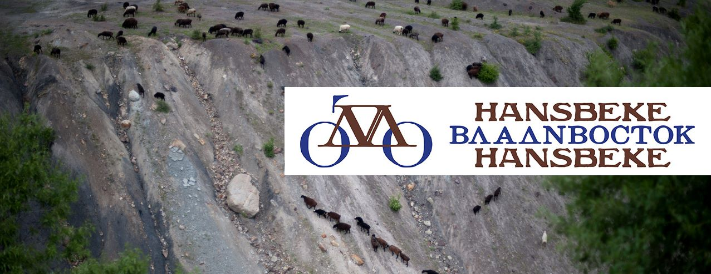

HANSBEKE-VLADIVOSTOK-HANSBEKE klinkt als een wielerklassieker en rijdt als een trein. Vanuit hun met sloop bedreigde station van Hansbeke fietsten fotograaf Koen Degroote en Laura Bracke naar de terminus van de legendarische Trans-Siberische spoorlijn.
Samen met de voorliefde van het koppel voor het Sovjet-verleden was dit project een logische maar daarom geen evidente keuze. Koens werk is geen journalistiek pur sang, maar bevat een flinke dosis poëzie.
Als doorwinterde Sovjet-reiziger was hij niet aan zijn proefstuk toe. Hij neemt je ondermeer mee naar het verdwenen Aralmeer dat met een fotoreportage eerder in Knack verscheen. Een verscholen schat vol Sovjet-kunst en fantasierijke vertelsels over historische wielerhelden uit de pen van Jan Boesman kruisten niet alleen hun pad, maar nu ook het jouwe met deze lezing.
Vrijdag 6 maart, 20u30, Fietskeuken Gent (De Binnenweg)
